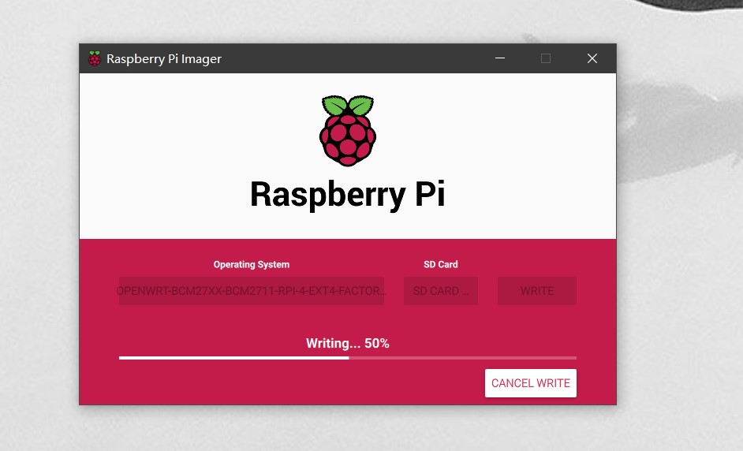
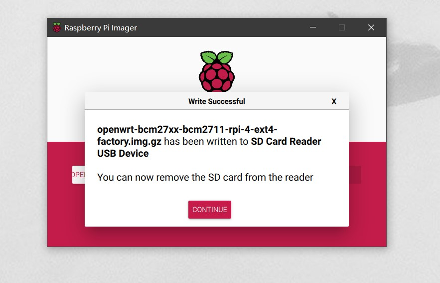
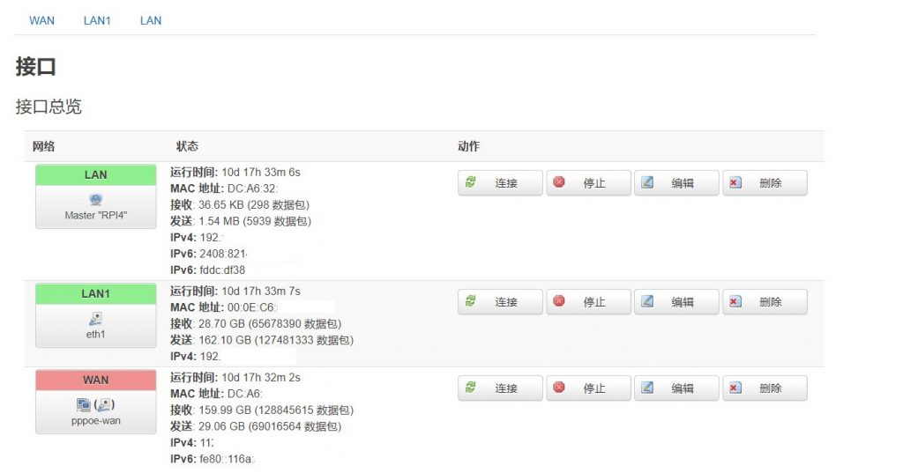
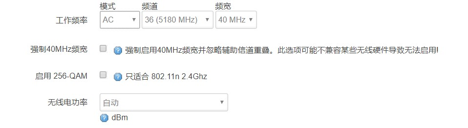
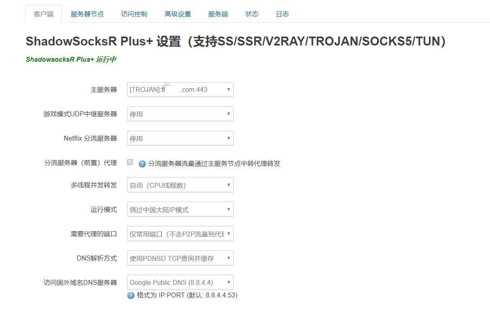

昨天在Ubuntu20.04(文件系统使用的zfs)上重新编译了raspberryPi4的openwrt固件.过程和这篇差不多(有几处错误),需要安装几个依赖. https://tl8517.com/build-openwrt/
编译错误汇总:
https://tl8517.com/openwrt-compile-error/
固件路径为:bin/targets/bcm27xx/bcm2711内的.img.gz 刷写工具用的官方的Raspberry Pi Imager :
windows版:
https://downloads.raspberrypi.org/imager/imager.exe
mac版:
https://downloads.raspberrypi.org/imager/imager.dmg
Ubuntu版:
https://downloads.raspberrypi.org/imager/imager_amd64.deb
不用解压为img文件在刷写,可以直接写入内存卡


刷完,接电,接网线,ssh登陆或是网页登陆:默认IP:192.268.1.1,密码: password
网口配置路径:/etc/config/network
网线配置路径:/etc/config/wireless
OpenWRT raspberrypi4 配置参数: 网卡配置（有线）：lan口为无线，lan1为usb网卡，wan口为raspberryPi4网口。
1 2 3 4 5 6 7 8 9 10 11 12 13 14 15 16 17 18 19 20 21 22 23 24 25 26 27 28 29 30 31 32 33 34 35 36 37 38 39 40 41 42 root@RaspberryPi4:/etc/config# vi network config interface option ifname option proto option ipaddr option netmask config globals option ula_prefix config interface option type option proto option netmask option ip6assign option _orig_ifname option ipaddr config interface option ifname option proto config interface option ifname option proto config interface option proto option ifname option ipaddr option netmask option dns config interface option proto option ifname option username option password option ipv6 option keepalive

网卡配置（无线）:无线不支持2.4G和5G同时打开,5G频道只能为36,频宽最高40MHz.(radio0和radio1不能删除,只需radio2参数)
1 2 3 4 5 6 7 8 9 10 11 12 13 14 15 16 17 18 19 20 21 22 23 24 25 26 27 28 29 30 31 32 33 34 35 36 37 38 39 40 41 42 43 44 45 46 47 root@RaspberryPi4:/etc/config# vi wireless config wifi-device 'radio0' option type 'mac80211' option channel '36' option hwmode '11a' option path 'virtual/mac80211_hwsim/hwsim0' option htmode 'VHT40' config wifi-iface 'default_radio0' option device 'radio0' option mode 'ap' option ssid 'OpenWrt' option encryption 'none' option network 'lan' config wifi-device 'radio1' option type 'mac80211' option channel '36' option hwmode '11a' option path 'virtual/mac80211_hwsim/hwsim1' option htmode 'VHT40' config wifi-iface 'default_radio1' option device 'radio1' option mode 'ap' option ssid 'OpenWrt' option encryption 'none' option network 'lan' config wifi-device 'radio2' option type 'mac80211' option channel '36' option hwmode '11a' option path 'platform/soc/fe300000.mmcnr/mmc_host/mmc1/mmc1:0001/mmc1:0001:1' option country '00' option legacy_rates '1' option mu_beamformer '0' option htmode 'VHT40' config wifi-iface 'default_radio2' option device 'radio2' option mode 'ap' option network 'lan' option ssid 'RPI4' option encryption 'psk-mixed' option key 'TanLei_8517'

trojan配置:
首先添加服务器节点.
GFW模式感觉没有绕过大陆IP模式好使.

1 2 3 4 5 6 7 8 9 10 11 12 13 14 15 16 17 18 19 20 21 22 23 24 25 26 27 28 29 30 31 32 33 34 35 36 37 38 39 40 41 42 43 44 45 46 47 48 49 50 51 52 53 54 55 config global option tunnel_forward '8.8.4.4:53' option tunnel_address '0.0.0.0' option run_mode 'router' option dports '2' option pdnsd_enable '1' option monitor_enable '1' option enable_switch '1' option switch_timeout '5' option switch_time '667' option switch_try_count '3' option gfwlist_url 'https://raw.githubusercontent.com/Loukky/gfwlist-by-loukky/master/gfwlist.txt' option chnroute_url 'https://ispip.clang.cn/all_cn.txt' option nfip_url 'https://raw.githubusercontent.com/QiuSimons/Netflix_IP/master/NF_only.txt' option adblock_url 'https://gitee.com/privacy-protection-tools/anti-ad/raw/master/anti-ad-for-dnsmasq.conf' option threads '0' option netflix_server 'nil' option netflix_proxy '0' option global_server 'cfg064a8f' config access_control option lan_ac_mode 'b' option router_proxy '1' list wan_fw_ips '149.154.160.0/20' list wan_fw_ips '67.198.55.0/24' list wan_fw_ips '91.108.4.0/22' list wan_fw_ips '91.108.56.0/22' list wan_fw_ips '109.239.140.0/24' config socks5_proxy option socks '0' option local_port '1080' option local_address '0.0.0.0' config server_global option enable_server '0' config server_subscribe option proxy '0' option auto_update_time '2' option auto_update '1' option filter_words '~G~\~_~W~W/~I~Y~A~G~O/QQ群/宮 ~X~Q/~X失~A~T~\~]~@/~[~^~[' option switch '1' config servers option switch_enable '0' option type 'trojan' option server 'xxxxxxx.com' option server_port '443' option password 'xxxxxxxx' option local_port '1234' option ip 'xxx.xxx.xxx.xxx'
openwrt更多内容:
https://tl8517.com/category/system/openwrt/